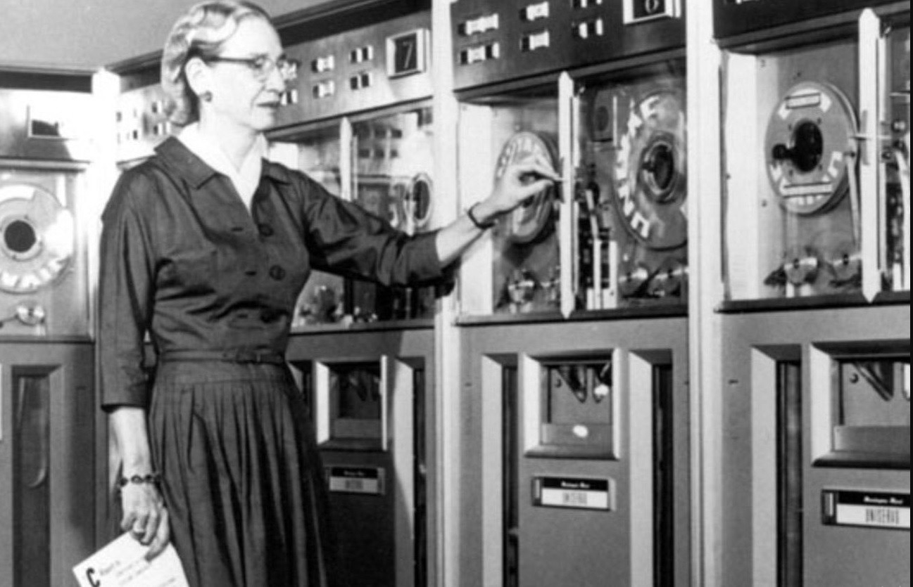
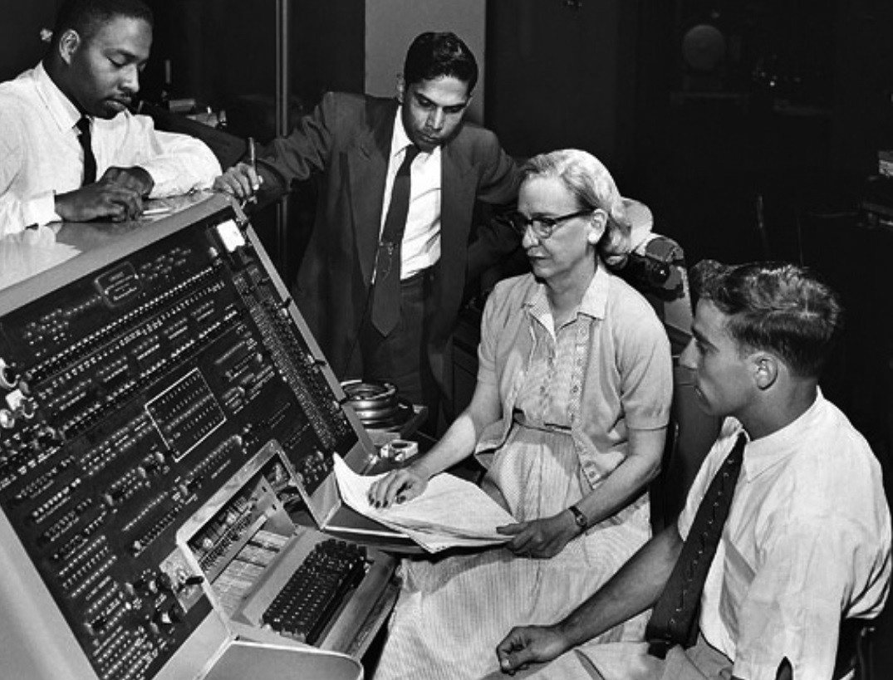
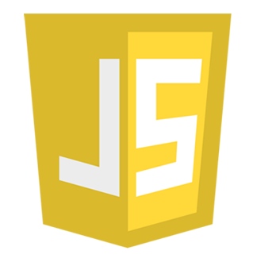
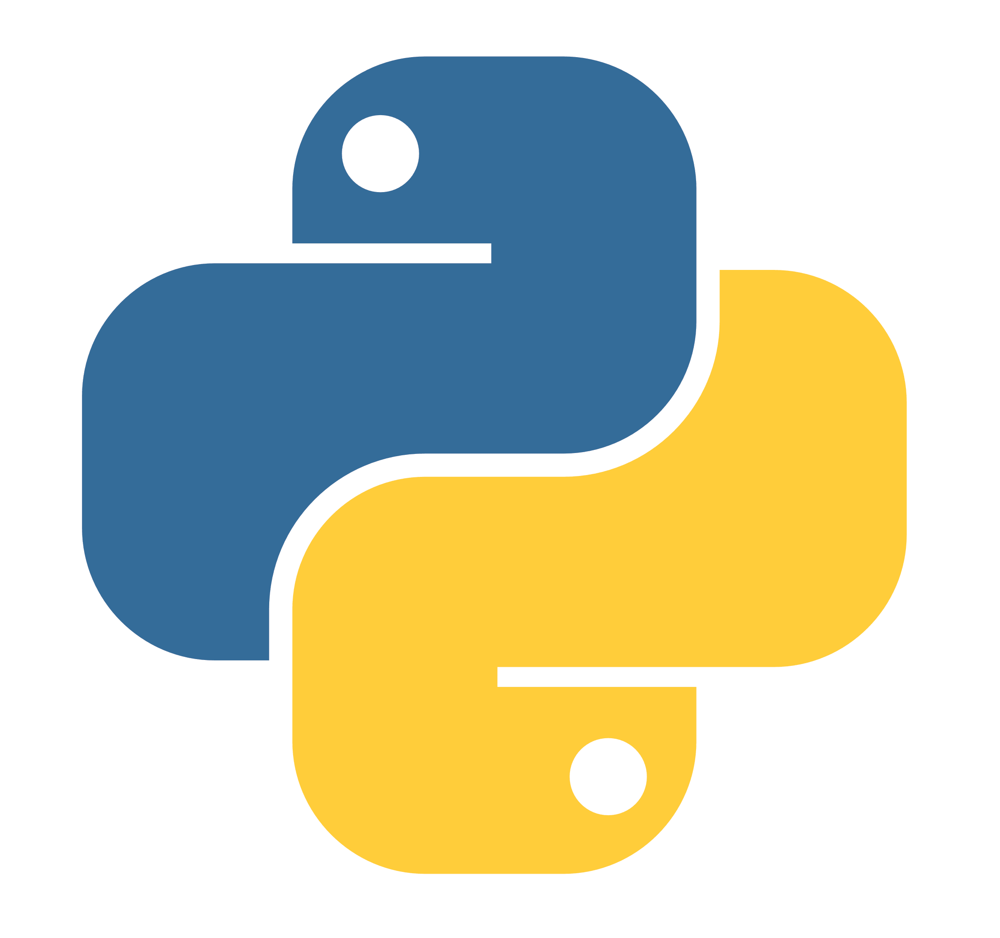
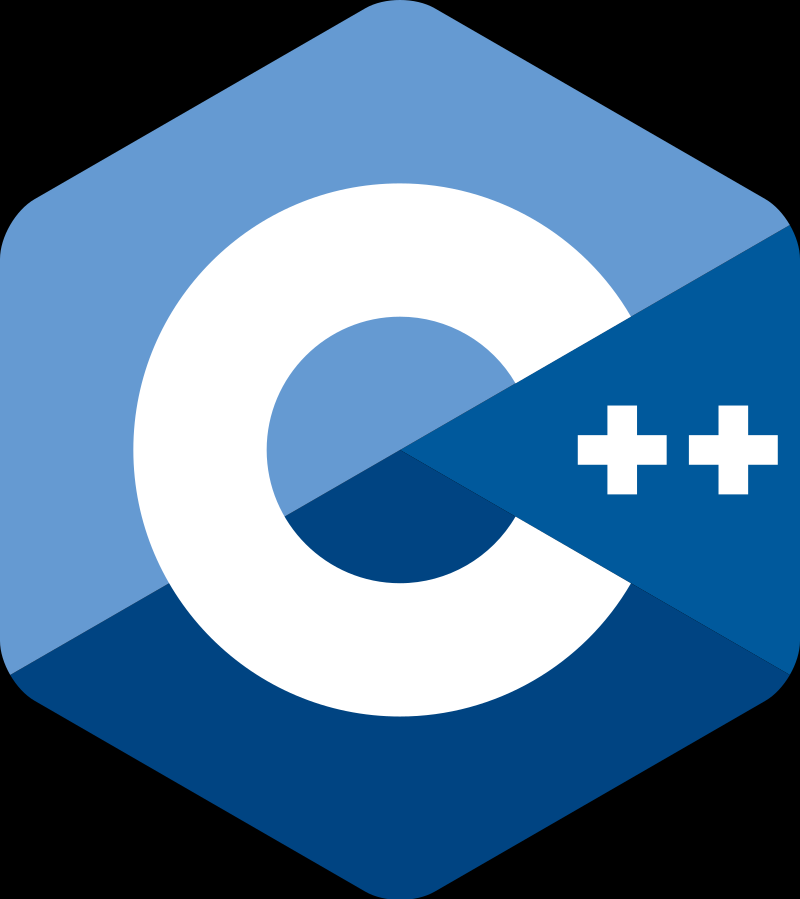

¿Qué es un Compilador?
Es un Software que traduce un programa escrito en un lenguaje
de programación de alto nivel (C / C ++, COBOL, etc.)
en lenguaje de máquina. Un compilador generalmente genera
lenguaje ensamblador primero y luego traduce el lenguaje ensamblador
al lenguaje máquina. Una utilidad conocida como «enlazador» combina
todos los módulos de lenguaje de máquina necesarios en un programa
ejecutable que se puede ejecutar en la computadora.

Historia del Compilador
El término «compilador» fue acuñado a principios
de 1950 por Grace Murray Hopper. La traducción fue vista
entonces como la «compilación» de una secuencia de rutinas seleccionadas.
Grace Brewster Murray Hopper fue
una científica informática estadounidense y
contraalmirante de la Marina de los Estados Unidos. Una de las
primeras programadoras de la computadora Harvard Mark I, fue una pionera
en programación que inventó una de las primeras herramientas relacionadas
con el compilador. Ella popularizó la idea de los lenguajes de programación independientes
de la máquina, lo que condujo al desarrollo de COBOL, un lenguaje de programación de alto
nivel que todavía se usa en la actualidad.
El primer compilador del lenguaje de alto nivel FORTRAN
se desarrolló entre 1954 y 1957 en IBM por un grupo dirigido por John Backus.
Un compilador es uno de los pilares de la programación y de cómo entender la comunicación
entre un lenguaje de alto nivel y una máquina. Al poder conocer el funcionamiento de este
paso intermedio nos permitirá desarrollar y programar de una forma más precisa los lenguajes
de alto nivel.
Tradicionalmente los compiladores generaban código máquina de inferior calidad que el que
podían escribir programadores humanos, pero actualmente los compiladores proporcionan hoy
en día un código máquina de alta calidad pequeño y rápido, haciendo poco atractiva la
programación en ensamblador, programación que en asignaturas como está ya simplemente se
menciona por conocerla pero no se realiza un estudio para aprender este tipo de programación.
Los programadores de ensamblador siguen teniendo ventaja en cuanto a que disponen de un
mayor conocimiento global del programa que les permite realizar determinadas optimizaciones
del código que resultan muy difíciles para los compiladores


¿En que se diferencia con un interprete?
Para responder a esta pregunta primero debemos conocer que es y para qué sirve un Intérprete.
Un intérprete lee un programa fuente ejecutable, escrito en un lenguaje de programación de alto nivel, así
como datos para este programa, y ejecuta el programa contra los datos para producir algunos resultados. Un
ejemplo es el intérprete de shell de Unix, que ejecuta comandos del sistema operativo de forma interactiva.
Hay que tener en cuenta que tanto los intérpretes como los compiladores (como cualquier otro programa) están
escritos en un lenguaje de programación de alto nivel (que puede ser diferente del idioma que aceptan) y se
traducen en código máquina.
Por ejemplo, un intérprete de Java puede escribirse completamente en C o incluso en Java. El programa fuente
del intérprete es independiente de la máquina ya que no genera código de máquina.
Un intérprete generalmente es más lento que un compilador porque procesa e interpreta cada enunciado de un
programa tantas veces como el número de evaluaciones de esta afirmación. Por ejemplo, cuando se interpreta
un bucle for, las afirmaciones dentro del cuerpo for-loop se analizarán y evaluarán en cada paso del bucle.
Algunos lenguajes, como Java y Lisp, vienen con un intérprete y un compilador. Los programas fuente de Java
(clases Java con extensión .java) son traducidos por el compilador javac en archivos de códigos de bytes
(con extensión .class).
El intérprete de Java, llamado Java Virtual Machine (JVM), en realidad puede interpretar códigos de bytes
directamente o puede compilarlos internamente en código máquina y luego ejecutar ese código.
Los compiladores son procesos complejos debido a que tienen varias fases por las que un programa fuente debe
de pasar antes de convertirse en un programa ejecutable, los pasos son los siguiente
Analizador léxico:
El analizador léxico o lexicográfico (Scanner en inglés) es la primera etapa del
proceso de compilación, el cual se encarga de dividir el programa en Tokens, los
cuales, según una tabla de símbolos definida por el mismo lenguaje.
De esta forma cada token del programa es clasificado según su significado para
ser procesados en la segunda etapa del proceso de compilación.
Analizador sintáctico:
El analizador sintáctico (Parse en inglés), es la segunda fase del proceso de compilación y tiene como
finalidad la generación de
un Árbol sintáctico, el cual no es más que una estructura de datos compleja que permite representar de una
forma más simple al programa fuente.
Los compiladores modernos utilizan estructuras de objetos para representa a un programa, de esta forma
existe una clase
específica para representa cada posible token de nuestra tabla de símbolos.
Analizador semántico:
El analizador semántico es el último paso antes de empezar a compilar realmente el código, prepara el
programa para ser compilado.
El analizador semántico parte del árbol sintáctico abstracto y tiene la finalidad de validar los puntos más
finos del programa, como por
ejemplo, validar compatibilidad en tipos de datos, que la variable utilizada en una instrucción este
previamente declara o que estén dentro del contexto,
si implementamos una interface que todos los métodos estén definidos, etc.
El analizador semántico es el que analiza que todo el programa tenga un significado exacto y que este no
pueda fallar en tiempo de ejecución.
Introduccion a los lenguajes de Programacion
En los últimos años los lenguajes de programación han ido evolucionado
en el desarrollo de sistemas o software, con el
objetivo principal de facilitar al usuario las actividades que realiza
día con día; por tal motivo, como programador, es importante conocer los
conceptos básicos de programación, los tipos de lenguajes que se utilizan para el desarrollo
y su funcionamiento para la interpretación de algoritmos, así como para dar solución a los problemas
que pudieran presentarse.
Definicion
En términos generales, un lenguaje de programación es una herramienta que permite desarrollar software o
programas para computadora. Los lenguajes de programación son empleados para diseñar e implementar programas
encargados de definir y administrar el comportamiento de los dispositivos físicos y lógicos de una
computadora. Lo anterior se logra mediante la creación e implementación de algoritmos de precisión que se
utilizan como una forma de comunicación humana con la computadora.
A grandes rasgos, un lenguaje de programación se conforma de una serie de símbolos y reglas de sintaxis y
semántica que definen la estructura principal del lenguaje y le dan un significado a sus elementos y
expresiones.
Programación es el proceso de análisis, diseño, implementación, prueba y depuración de un algoritmo, a
partir de un lenguaje que compila y genera un código fuente ejecutado en la computadora.
La función principal de los lenguajes de programación es escribir programas que permiten la comunicación
usuario-máquina. Unos programas especiales (compiladores o intérpretes) convierten las instrucciones
escritas en código fuente, en instrucciones escritas en lenguaje máquina (0 y 1).
Los intérpretes leen la instrucción línea por línea y obtienen el código máquina correspondiente.
En cuanto a los compiladores, traducen los símbolos de un lenguaje de programación a su equivalencia escrito
en lenguaje máquina (proceso conocido como compilar). Por último, se obtiene un programa ejecutable.
Para entender mejor la forma como se estructura un lenguaje de programación, observa la siguiente imagen (en
este apunte se utilizará el lenguaje C).
En particular, este lenguaje está caracterizado por ser de uso general, de sintaxis compacta y portable.
Así, un lenguaje de programación es una herramienta informática que permite desarrollar programas para
computadoras.
Historia de los Lenguajes de Programación
Profesor de matemáticas e inventor en la universidad de Cambridge, Inglaterra, a mediados del siglo XIX,
Charles Babbage fue el primero en concebir la idea de un lenguaje de programación, al predecir varias de las
teorías en las que se basan las computadoras actuales.
Babbage desarrolló la idea de una máquina analítica programable que, por limitaciones tecnológicas de su
época, no pudo ser construida. Junto con él, su colaboradora Ada Lovelace es considerada como la primera
programadora de la historia, ya que escribió los primeros programas para la máquina concebida por Babbage en
tarjetas perforadas, siguiendo una lógica de programación muy similar a la empleada en nuestros días. Estos
programas nunca pudieron verse ejecutados debido a que la máquina no fue construida.
Las técnicas empleadas por Babbage y Ada fueron seguidas por los primeros programadores de computadoras,
quienes se valieron de tarjetas perforadas para introducir sus programas en las computadoras.
En 1823, con el apoyo del gobierno británico, se aprobó el proyecto de construcción de una máquina de
diferencias. Esta máquina era un dispositivo mecánico diseñado para realizar sumas de forma repetitiva.
Babbage abandonó el proyecto para dedicarse a su máquina analítica, influenciado por la creación de un
fabricante de telas francés, Joseph Marie Jacquard, que había desarrollado una máquina tejedora con la
capacidad de reproducir patrones de tejidos, leyendo información codificada en tarjetas perforadas de papel
rígido.
Desde entonces, Babbage se propuso construir una máquina que efectuara cálculos matemáticos de precisión,
empleando 20 dígitos, y que pudiera ser programada mediante tarjetas perforadas. Aun cuando esta idea quedó
sólo en el proyecto, fue una contribución muy importante para el diseño y funcionamiento de las computadoras
actuales.
Lenguaje máquina
Es el sistema de códigos interpretable directamente por un circuito microprogramable, como el
microprocesador de una computadora.
Este lenguaje se compone de un conjunto de instrucciones que determinan acciones que serán realizadas
por
la máquina. Y un programa de computadora consiste en una cadena de estas instrucciones de lenguaje
de máquina (más los datos). Normalmente estas instrucciones son ejecutadas en secuencia, con eventuales
cambios de flujo causados por el propio programa o eventos externos. El lenguaje máquina es específico
de cada máquina o arquitectura de la máquina, aunque el conjunto de instrucciones disponibles pueda ser
similar entre ellas.
Lenguajes de bajo nivel
Un lenguaje de programación de bajo nivel es el que proporciona poca o ninguna abstracción
del microprocesador de una computadora. Consecuentemente, su trasladado al lenguaje máquina es fácil.
El término ensamblador (del inglés assembler) se refiere a un tipo de programa informático encargado
de traducir un archivo fuente, escrito en un lenguaje ensamblador, a un archivo objeto que contiene
código máquina ejecutable directamente por la máquina para la que se ha generado.
Lenguaje de alto nivel
Los lenguajes de programación de alto nivel se caracterizan porque su estructura semántica es muy similar
a
la forma como escriben los humanos, lo que permite codificar los algoritmos de manera más natural,
en lugar de codificarlos en el lenguaje binario de las máquinas, o a nivel de lenguaje ensamblador.
Tipos de lenguajes de programacion
JavaScript
Este lenguaje de programación se utiliza principalmente en el desarrollo web, tanto para el usuario como para
el servidor.
JavaScript se destaca por su capacidad para crear interactividad en las páginas web. Así como por su amplia
variedad de bibliotecas
y frameworks que facilitan el desarrollo.

Python
Es un lenguaje de programación de alto nivel. Se utiliza en una amplia variedad de aplicaciones,
desde el análisis de datos hasta el desarrollo
de videojuegos. Python es conocido por su sintaxis clara y concisa, lo que lo hace fácil de aprender y de
utilizar.

C++
Es un lenguaje de programación de bajo nivel que se utiliza en el desarrollo de sistemas operativos,
videojuegos y aplicaciones de alto rendimiento. C++ es conocido por su capacidad para acceder
directamente a la memoria del sistema, lo que lo hace ideal para aplicaciones de alto rendimiento.
